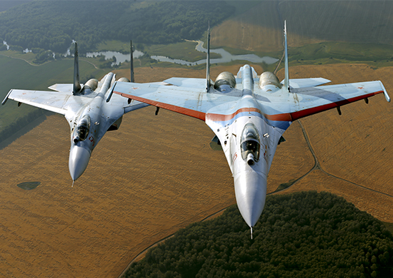
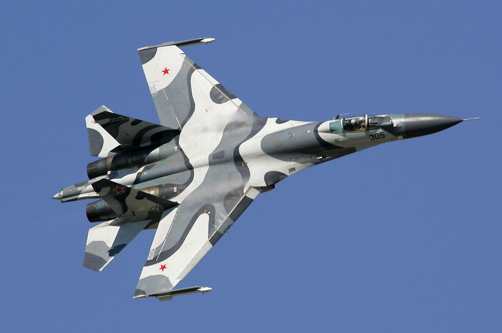
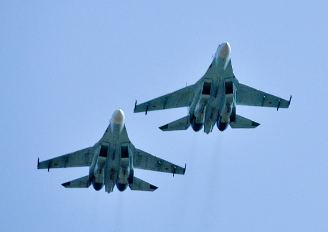
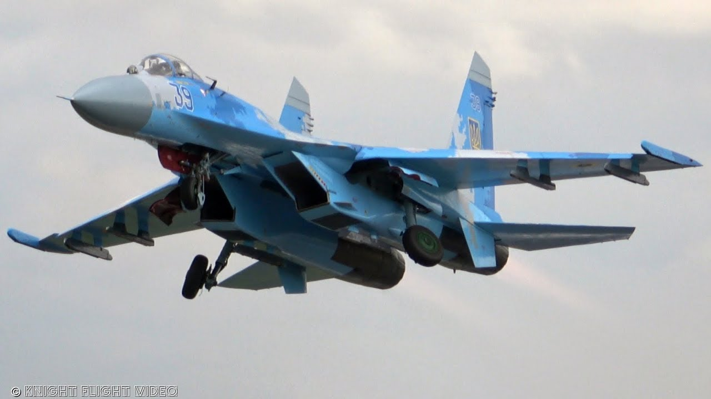

| Технические характеристики; |
| Экипаж, чел. | 1 |
| Двигатели ТРДД АЛ-31Ф | 2 |
| Тяга двигателей, кгс | 2*12500 |
| Скорость максимальная, на высоте/у земли, км/ч | 2 430/1 400 |
| Практический потолок, м | 18 000 |
| Перегрузка максимальная, ед. | 9 |
| Дальность полета, у земли/максимальная, км> | 1 380/3 250 |
| Боевой радиус, км | 1 200 |
| Масса нормальная, кг | 22 220 |
| Масса максимальная, кг | 28 000 |
| Масса пустого самолета, кг | 16 000 |
| Максимальная масса боевой нагрузки, кг | 6 000 |
| Полный запас топлива, л | 12 000 |
| Посадочная скорость, км/ч | 225-240 |
| Длина разбега, м | 500-700 |
| Длина пробега с ТП, м | 620-700 |
| Длина самолета без ПВД, м | 21,934 |
| Высота самолета, м | 5,93 |
| Размах крыла, м | 14.70 |
| Бортовая РЛС:
- Дальность обнаружения цели, км
- Дальность захвата цели, км |
90-70 |
| Вооружение |
Пушка ГШ-30-1:
- Калибр, мм
- Скорострельность, выстрелов/мин
- Боезапас, снарядов | 1
30
1 500
150 |
| Количество внешних узлов подвески | 10 |
- УР «воздух-воздух» Р-27Р, Р-27Т, Р-27ЭР или Р-27ЭТ
- УР «воздух-воздух» Р-73
- авиабомбы АБ-100/АБ-150/АБ-500 | 6
4
20/16/8 |



